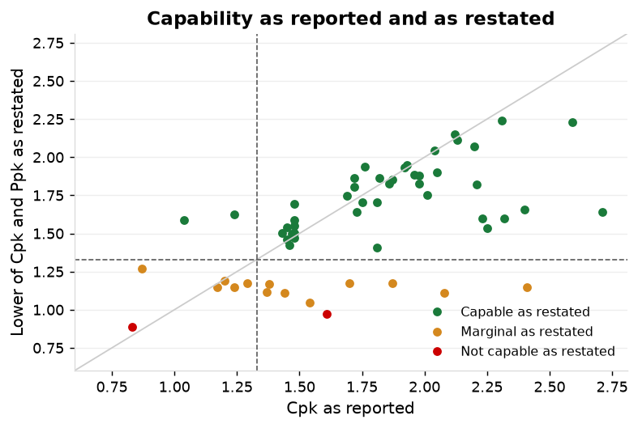
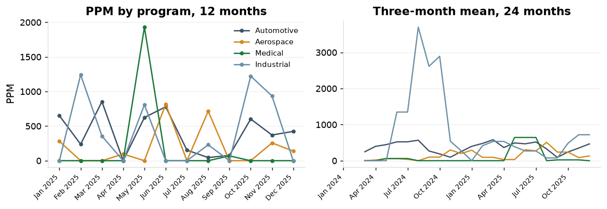
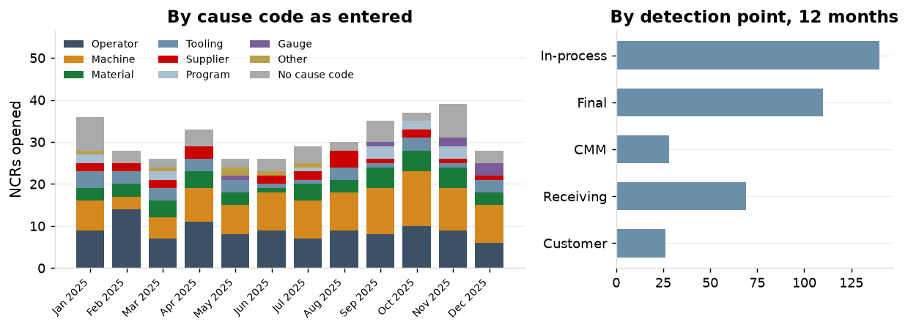
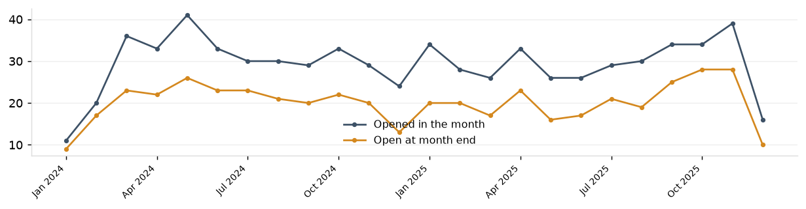
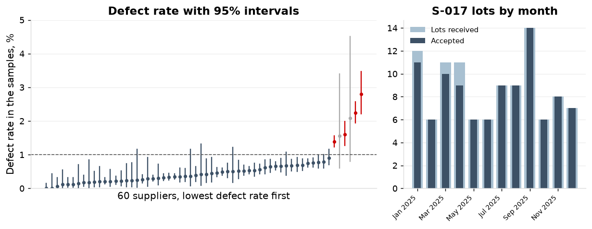
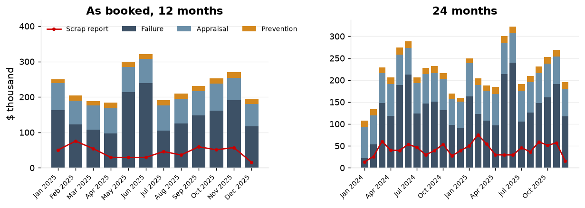
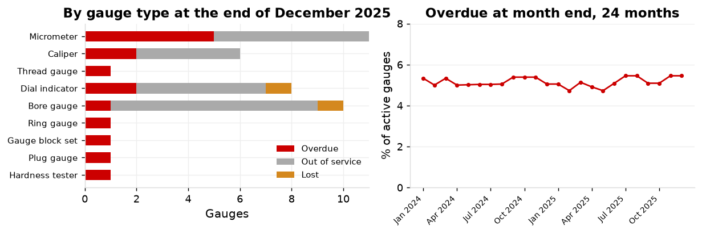
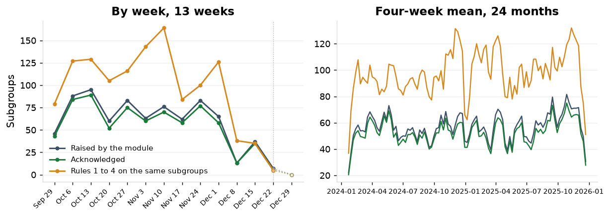
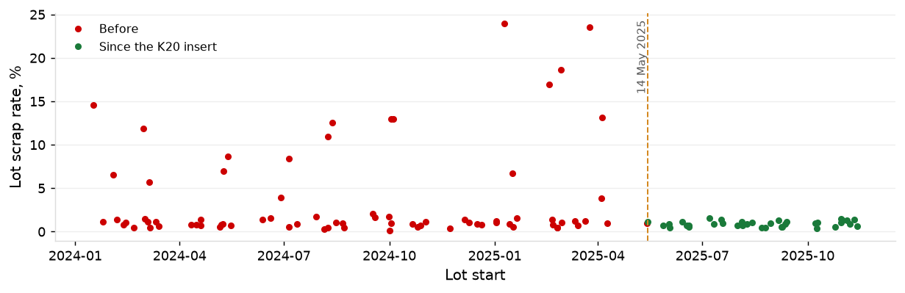

| Part | Characteristic | Type | Cpk as reported | Cpk as restated | Ppk as restated | Method | Category as restated |
|---|---|---|---|---|---|---|---|
| P-12589-C | C-12589-36 | bore | 0.75 | 0.71 | pooled within, normal | not capable | |
| P-10798-C | C-10798-01 | length | 0.82 | 0.71 | pooled within, normal | not capable | |
| P-13285-C | C-13285-07 | runout | 0.73 | 0.73 | percentile | not capable | |
| P-10725-B | C-10725-31 | runout | 0.88 | 0.88 | percentile | not capable | |
| P-10604-A | C-10604-32 | diameter | 0.88 | 0.90 | pooled within, normal | not capable | |
| P-11909-A | C-11909-01 | length | 0.83 | 0.90 | 0.89 | pooled within, normal | not capable |
| P-15261-A | C-15261-31 | length | 0.92 | 0.92 | pooled within, normal | not capable | |
| P-10798-C | C-10798-35 | bore | 0.97 | 0.98 | pooled within, normal | not capable | |
| P-13317-A | C-13317-14 | diameter | 1.61 | 1.30 | 0.97 | pooled within, normal | not capable |
| P-16652-A | C-16652-05 | length | 0.99 | 0.98 | pooled within, normal | not capable | |
| P-15211-C | C-15211-14 | diameter | 1.01 | 0.99 | pooled within, normal | not capable | |
| P-10845-A | C-10845-02 | length | 1.10 | 1.02 | pooled within, normal | marginal | |
| P-10749-A | C-10749-10 | length | 1.07 | 1.04 | pooled within, normal | marginal | |
| P-10749-A | C-10749-16 | length | 1.12 | 1.04 | pooled within, normal | marginal | |
| P-12835-A | C-12835-01 | diameter | 1.54 | 1.47 | 1.05 | pooled within, normal | marginal |
| P-10845-A | C-10845-24 | bore | 1.17 | 1.05 | pooled within, normal | marginal | |
| P-13307-B | C-13307-06 | flatness | 2.08 | 1.11 | 1.11 | percentile | marginal |
| P-11163-D | C-11163-06 | diameter | 1.44 | 1.59 | 1.11 | pooled within, normal | marginal |
| P-11167-D | C-11167-04 | diameter | 1.37 | 1.44 | 1.12 | pooled within, normal | marginal |
| P-11923-A | C-11923-04 | length | 1.24 | 1.16 | 1.13 | pooled within, normal | marginal |
| P-10604-A | C-10604-38 | length | 1.24 | 1.15 | pooled within, normal | marginal | |
| P-13357-A | C-13357-02 | flatness | 2.41 | 1.15 | 1.15 | percentile | marginal |
| P-11920-C | C-11920-12 | length | 0.98 | 1.19 | 1.16 | pooled within, normal | marginal |
| P-10798-C | C-10798-31 | diameter | 1.16 | 1.18 | pooled within, normal | marginal | |
| P-11930-A | C-11930-12 | length | 1.38 | 1.18 | 1.17 | pooled within, normal | marginal |
| P-11173-A | C-11173-11 | diameter | 1.70 | 1.69 | 1.17 | pooled within, normal | marginal |
| P-12828-B | C-12828-17 | true position | 1.87 | 1.18 | 1.18 | percentile | marginal |
| P-11201-A | C-11201-16 | diameter | 1.29 | 1.22 | 1.18 | pooled within, normal | marginal |
| P-12589-C | C-12589-02 | diameter | 1.21 | 1.18 | pooled within, normal | marginal | |
| P-16282-A | C-16282-33 | bore | 1.27 | 1.19 | pooled within, normal | marginal | |
| P-12594-C | C-12594-35 | bore | 1.20 | 1.20 | pooled within, normal | marginal | |
| P-11226-C | C-11226-03 | diameter | 1.20 | 1.24 | 1.21 | pooled within, normal | marginal |
| P-14108-A | C-14108-14 | runout | 0.87 | 1.27 | 1.27 | percentile | marginal |
| P-10688-A | C-10688-18 | length | 1.39 | 1.28 | pooled within, normal | marginal | |
| P-18856-A | C-18856-30 | bore | 1.34 | 1.28 | pooled within, normal | marginal | |
| P-16605-A | C-16605-37 | surface finish Ra | 1.31 | 1.31 | percentile | marginal | |
| P-10743-D | C-10743-23 | bore | 1.43 | 1.32 | pooled within, normal | marginal | |
| P-10857-C | C-10857-01 | length | 1.46 | 1.38 | pooled within, normal | capable | |
| P-10653-D | C-10653-20 | surface finish Ra | 1.39 | 1.39 | percentile | capable | |
| P-12614-A | C-12614-09 | diameter | 1.52 | 1.40 | pooled within, normal | capable | |
| P-10749-A | C-10749-35 | flatness | 1.41 | 1.41 | percentile | capable | |
| P-14928-A | C-14928-12 | bore | 1.81 | 1.91 | 1.41 | pooled within, normal | capable |
| P-13321-A | C-13321-18 | diameter | 1.46 | 1.42 | 1.42 | pooled within, normal | capable |
| P-10729-A | C-10729-31 | surface finish Ra | 1.45 | 1.45 | percentile | capable | |
| P-10607-C | C-10607-20 | diameter | 1.48 | 1.45 | pooled within, normal | capable | |
| P-11962-A | C-11962-08 | length | 1.45 | 1.48 | 1.46 | pooled within, normal | capable |
| P-12861-C | C-12861-09 | diameter | 1.48 | 1.49 | 1.47 | pooled within, normal | capable |
| P-10607-C | C-10607-07 | length | 1.60 | 1.49 | pooled within, normal | capable | |
| P-11354-C | C-11354-05 | diameter | 1.53 | 1.49 | individuals, normal | capable | |
| P-11265-A | C-11265-10 | diameter | 1.47 | 1.50 | 1.50 | pooled within, normal | capable |
| P-14103-B | C-14103-05 | diameter | 1.43 | 1.52 | 1.50 | pooled within, normal | capable |
| P-16645-A | C-16645-35 | runout | 1.50 | 1.50 | percentile | capable | |
| P-14159-A | C-14159-01 | diameter | 1.48 | 1.59 | 1.51 | pooled within, normal | capable |
| P-10632-C | C-10632-30 | runout | 1.51 | 1.51 | percentile | capable | |
| P-12479-D | C-12479-30 | length | 1.59 | 1.52 | pooled within, normal | capable | |
| P-10604-A | C-10604-16 | bore | 1.59 | 1.52 | pooled within, normal | capable | |
| P-16665-D | C-16665-09 | diameter | 1.57 | 1.52 | pooled within, normal | capable | |
| P-14952-A | C-14952-04 | bore | 2.25 | 2.08 | 1.53 | pooled within, normal | capable |
| P-14140-A | C-14140-03 | diameter | 1.45 | 1.56 | 1.54 | pooled within, normal | capable |
| P-11373-D | C-11373-17 | diameter | 1.54 | 1.61 | individuals, normal | capable | |
| P-11253-B | C-11253-11 | diameter | 1.48 | 1.58 | 1.55 | pooled within, normal | capable |
| P-18841-A | C-18841-16 | diameter | 1.69 | 1.56 | pooled within, normal | capable | |
| P-10604-A | C-10604-08 | diameter | 1.64 | 1.56 | individuals, normal | capable | |
| P-10729-A | C-10729-28 | bore | 1.65 | 1.58 | pooled within, normal | capable | |
| P-11950-A | C-11950-01 | length | 1.48 | 1.65 | 1.59 | pooled within, normal | capable |
| P-14117-A | C-14117-10 | runout | 1.04 | 1.59 | 1.59 | percentile | capable |
| P-10215-A | C-10215-09 | diameter | 1.64 | 1.60 | pooled within, normal | capable | |
| P-14992-A | C-14992-08 | bore | 2.23 | 2.21 | 1.60 | pooled within, normal | capable |
| P-14989-D | C-14989-04 | bore | 2.32 | 2.18 | 1.60 | pooled within, normal | capable |
| P-10632-C | C-10632-27 | surface finish Ra | 1.60 | 1.60 | percentile | capable | |
| P-10775-A | C-10775-30 | diameter | 1.61 | 1.69 | pooled within, normal | capable | |
| P-12314-A | C-12314-35 | bore | 1.71 | 1.62 | pooled within, normal | capable | |
| P-14134-A | C-14134-23 | runout | 1.24 | 1.62 | 1.62 | percentile | capable |
| P-13369-A | C-13369-01 | diameter | 1.73 | 1.68 | 1.64 | pooled within, normal | capable |
| P-14966-D | C-14966-17 | bore | 2.71 | 2.20 | 1.64 | pooled within, normal | capable |
| P-12594-C | C-12594-11 | diameter | 1.72 | 1.65 | pooled within, normal | capable | |
| P-14918-A | C-14918-14 | bore | 2.40 | 2.24 | 1.66 | pooled within, normal | capable |
| P-12367-A | C-12367-33 | bore | 1.68 | 1.67 | pooled within, normal | capable | |
| P-18757-A | C-18757-21 | length | 1.68 | 1.68 | pooled within, normal | capable | |
| P-10845-A | C-10845-26 | diameter | 1.71 | 1.68 | pooled within, normal | capable | |
| P-13403-A | C-13403-09 | diameter | 1.48 | 1.73 | 1.69 | pooled within, normal | capable |
| P-11320-D | C-11320-01 | diameter | 1.75 | 1.74 | 1.70 | pooled within, normal | capable |
| P-11282-A | C-11282-06 | diameter | 1.81 | 1.74 | 1.71 | pooled within, normal | capable |
| P-12016-A | C-12016-08 | length | 1.69 | 1.79 | 1.75 | pooled within, normal | capable |
| P-12947-A | C-12947-12 | diameter | 2.01 | 1.90 | 1.75 | pooled within, normal | capable |
| P-17038-D | C-17038-10 | bore | 1.78 | 1.77 | individuals, normal | capable | |
| P-17014-A | C-17014-02 | bore | 1.81 | 1.79 | individuals, normal | capable | |
| P-10607-C | C-10607-02 | diameter | 1.80 | 1.83 | individuals, normal | capable | |
| P-14212-C | C-14212-17 | diameter | 1.72 | 1.91 | 1.81 | pooled within, normal | capable |
| P-17004-D | C-17004-05 | bore | 2.21 | 1.82 | 1.83 | individuals, normal | capable |
| P-12884-C | C-12884-18 | diameter | 1.98 | 1.89 | 1.82 | pooled within, normal | capable |
| P-12925-A | C-12925-01 | diameter | 1.86 | 1.83 | 1.85 | pooled within, normal | capable |
| P-11301-A | C-11301-04 | diameter | 1.87 | 2.01 | 1.85 | pooled within, normal | capable |
| P-13328-A | C-13328-14 | diameter | 1.72 | 1.87 | 1.86 | pooled within, normal | capable |
| P-14168-B | C-14168-10 | diameter | 1.82 | 1.89 | 1.86 | pooled within, normal | capable |
| P-13350-A | C-13350-04 | diameter | 1.98 | 1.90 | 1.88 | pooled within, normal | capable |
| P-11984-A | C-11984-02 | length | 1.96 | 1.89 | 1.89 | pooled within, normal | capable |
| P-10725-B | C-10725-07 | length | 2.00 | 1.90 | pooled within, normal | capable | |
| P-11347-A | C-11347-08 | diameter | 2.05 | 1.94 | 1.90 | pooled within, normal | capable |
| P-13380-B | C-13380-09 | diameter | 1.92 | 2.00 | 1.93 | pooled within, normal | capable |
| P-14196-A | C-14196-28 | diameter | 1.76 | 1.94 | 1.94 | pooled within, normal | capable |
| P-12023-C | C-12023-05 | length | 1.93 | 2.05 | 1.95 | pooled within, normal | capable |
| P-10688-A | C-10688-26 | surface finish Ra | 2.00 | 2.00 | percentile | capable | |
| P-10688-A | C-10688-37 | bore | 2.13 | 2.03 | pooled within, normal | capable | |
| P-10857-C | C-10857-39 | surface finish Ra | 2.03 | 2.03 | percentile | capable | |
| P-14175-A | C-14175-03 | diameter | 2.04 | 2.14 | 2.05 | pooled within, normal | capable |
| P-11329-A | C-11329-04 | diameter | 2.20 | 2.10 | 2.07 | pooled within, normal | capable |
| P-12868-D | C-12868-03 | diameter | 2.13 | 2.16 | 2.11 | pooled within, normal | capable |
| P-12907-D | C-12907-02 | diameter | 2.12 | 2.15 | 2.15 | pooled within, normal | capable |
| P-12004-A | C-12004-08 | length | 2.59 | 2.28 | 2.23 | pooled within, normal | capable |
| P-12878-C | C-12878-19 | diameter | 2.31 | 2.32 | 2.24 | pooled within, normal | capable |
| P-10607-C | C-10607-37 | true position | 2.60 | 2.60 | percentile | capable |

| Customer | Program | Complaints | Complaint quantity | Pieces shipped | PPM | Program median |
|---|---|---|---|---|---|---|
| CU-028 | aerospace | 2 | 12 | 17,450 | 688 | 131 |
| CU-023 | aerospace | 1 | 5 | 9,363 | 534 | 131 |
| CU-022 | aerospace | 1 | 14 | 35,163 | 398 | 131 |
| CU-027 | aerospace | 1 | 2 | 12,386 | 161 | 131 |
| CU-021 | aerospace | 1 | 7 | 53,403 | 131 | 131 |
| CU-007 | automotive | 4 | 69 | 64,952 | 1,062 | 47 |
| CU-011 | automotive | 2 | 56 | 57,184 | 979 | 47 |
| CU-008 | automotive | 2 | 43 | 50,733 | 848 | 47 |
| CU-012 | automotive | 2 | 24 | 52,391 | 458 | 47 |
| CU-010 | automotive | 2 | 42 | 102,194 | 411 | 47 |
| CU-009 | automotive | 3 | 17 | 126,407 | 134 | 47 |
| CU-001 | automotive | 1 | 6 | 64,337 | 93 | 47 |
| CU-045 | industrial | 1 | 22 | 12,436 | 1,769 | 295 |
| CU-042 | industrial | 3 | 52 | 51,755 | 1,005 | 295 |
| CU-035 | industrial | 2 | 18 | 25,920 | 694 | 295 |
| CU-041 | industrial | 2 | 28 | 77,417 | 362 | 295 |
| CU-031 | medical | 2 | 11 | 16,492 | 667 | 15 |
| CU-029 | medical | 1 | 3 | 41,934 | 72 | 15 |
| CU-033 | medical | 1 | 1 | 32,285 | 31 | 15 |



| Supplier | Commodity | Lots | Pieces sampled | Defect rate (95% interval) | Lot acceptance (95% interval) | Published rank | Rank by defect rate |
|---|---|---|---|---|---|---|---|
| S-017 | plating | 194 | 18,317 | 1.39% (1.22 to 1.56) | 92.8% (88.5 to 95.8) | 54 | 55 |
| S-030 | heat treat | 97 | 8,636 | 2.25% (1.95 to 2.58) | 85.6% (77.6 to 91.5) | 56 | 57 |
| S-041 | passivation | 69 | 4,739 | 1.60% (1.27 to 1.99) | 84.1% (74.1 to 91.2) | 57 | 56 |
| S-053 | castings | 45 | 2,650 | 2.79% (2.22 to 3.47) | 82.2% (69.2 to 91.2) | 58 | 58 |
| S-059 | other | 4 | 320 | 1.56% (0.60 to 3.39) | 75.0% (28.4 to 97.2) | 59 | |
| S-056 | castings | 3 | 240 | 2.08% (0.80 to 4.51) | 66.7% (17.7 to 96.1) | 60 |



| Week of | Subgroups recorded | Alarms raised | Acknowledged | Flagged by rules 1 to 4 |
|---|---|---|---|---|
| Sep 22, 2025 | 2,161 | 36 | 34 | 85 |
| Sep 29, 2025 | 1,530 | 46 | 43 | 78 |
| Oct 6, 2025 | 2,035 | 88 | 84 | 137 |
| Oct 13, 2025 | 2,287 | 102 | 96 | 138 |
| Oct 20, 2025 | 1,974 | 61 | 53 | 113 |
| Oct 27, 2025 | 1,737 | 85 | 77 | 129 |
| Nov 3, 2025 | 3,369 | 64 | 61 | 144 |
| Nov 10, 2025 | 2,543 | 81 | 75 | 170 |
| Nov 17, 2025 | 1,170 | 77 | 72 | 106 |
| Nov 24, 2025 | 1,252 | 88 | 81 | 103 |
| Dec 1, 2025 | 5,009 | 107 | 99 | 203 |
| Dec 8, 2025 | 1,013 | 38 | 36 | 82 |
| Dec 15, 2025 | 940 | 59 | 54 | 100 |
